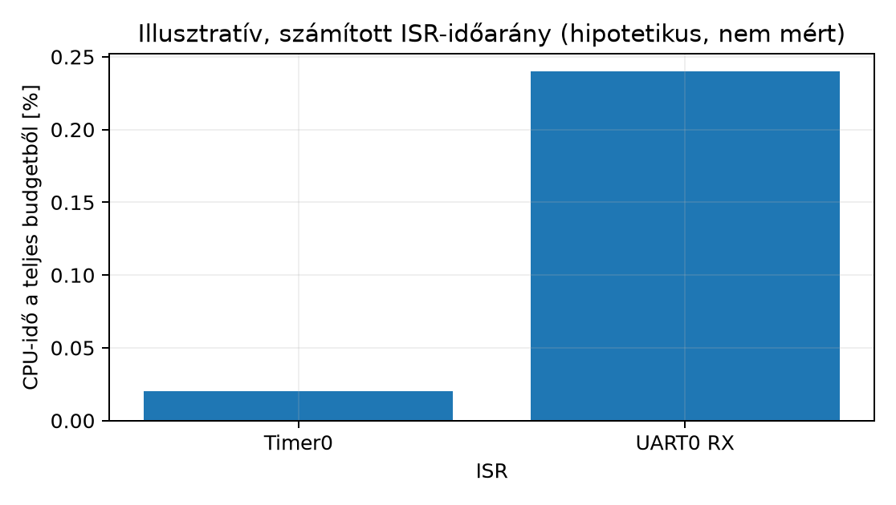

Az előző alfejezetekben külön-külön megismertük a timer-periódusos
feladatot (Timer-alapú időzítés és periodikus
feladatok), a periféria-struktúrát (Periféria-regiszter absztrakció C struktúrával), az
ISR írását (ISR írása: C és assembly vegyesen)
és a memóriatérképet (Memóriatérkép és a bare-metal
futási modell). A záróprojekt lényege, hogy ezeket egyetlen,
önállóan reprodukálható rendszerbe illesszük. Az ipari és
beágyazott gyakorlatban azonban egy firmware nem ott kezdődik, hogy az
ember ISR-t ír. Előbb specifikáció készül: pontosan
rögzítjük, milyen perifériák vesznek részt, melyik megszakítás mit
csinál, mi az interfész a külvilág felé, mennyi erőforrást költünk, és
milyen mérés igazolja a helyes működést. Ez az alfejezet ezt a
specifikációs munkát végzi el egy konkrét, a QEMU
mps2-an385 platformon megvalósítható feladaton, mielőtt a
következő alfejezetekben (Megvalósítás: driver és
ISR integrálása a minimal runtime-ba) kódot írnánk.
A mérnöki indok egyszerű: az interrupt-vezérelt rendszerek hibái szinte kivétel nélkül specifikációs hiányból erednek — nem tisztázott, melyik ISR módosíthatja a közös állapotot, mekkora a prioritás, mi történik, ha két megszakítás egyszerre érkezik, vagy hogyan igazoljuk, hogy a periódus valóban tartja magát. Az itteni munkafolyamat: (1) fixáljuk a periféria-kombinációt és az interfészt, (2) felrajzoljuk a megszakítás-logikát és a közös állapotot, (3) megtervezzük a mérési és validációs tervet, (4) meghatározzuk az erőforrás-budgetet, végül (5) megfogalmazzuk az elfogadási kritériumokat. Ebben a fejezetben minden konkrét cím és regiszter jelölt példaérték, ellenőrzendő a használt QEMU-verzióval; a módszer maga azonban stabil.
Firmware-projektspecifikáció: mérnöki dokumentum, amely egy beágyazott feladatot öt, egymást kiegészítő szerződésben rögzít: (a) a felhasznált perifériák és címeik, (b) a külső interfész (parancsok, kimenetek, időzítések), (c) a megszakítás-logika (melyik ISR, milyen prioritással, milyen állapotot oszt meg), (d) az erőforrás-budget (vektortábla, verem, SRAM), valamint (e) a mérési és elfogadási terv. A specifikáció nem implementáció: NEM tartalmaz konkrét C- vagy assembly-sorokat a viselkedés leírásán túl, és nem írja elő a belső algoritmusokat. A célja az, hogy a megvalósítás (Megvalósítás: driver és ISR integrálása a minimal runtime-ba) és az audit (Auditszempontok bare-metal firmware-hez) egyaránt visszavezethető legyen rá.
A specifikáció hatóköre ez a projekt: egyetlen
Cortex-M3 mag, egy QEMU mps2-an385 machine, nulla operációs
rendszer, egy main és néhány ISR. Nem
terjed ki RTOS-ütemezőre, dinamikus memóriakezelésre vagy többmagos
futásra (lásd Témaköri határok). Előfeltétel: az a074 periféria-struktúra-minta és az a077 timer-periódus-minta ismerete.
Három jelölt kombináció jön szóba az mps2-an385 ismert
perifériakészletéből (CMSDK APB UART, Timer, GPIO, Dual Timer):
| Kombináció | Tanulság | Hátrány |
|---|---|---|
| GPIO + timer | Egyszerű; egy ISR | Nincs stream, kevés versenyhelyzet; QEMU-n nem futtatható |
| UART + timer | Periódus + stream; két ISR, valós megosztott állapot | Nincs külső eseményforrás |
| GPIO + UART + timer | Esemény + periódus + stream | A GPIO-rész QEMU-n nem futtatható |
A választást a platform támogatása dönti el, nem csak a tanulság. A
támogatási mátrix szerint a QEMU 8.2.2
mps2-an385 gépen a UART0 és a Timer0 implementált, a
GPIO nem. Ezért a projekt egyetlen
alapfeladata a QEMU-n teljesíthető UART + timer kombináció. Ennek minden
követelményét egy kódrész valósítja meg, és egy automatizált teszt
ellenőrzi (a079, a080).
A GPIO-s eseményszámláló nem része az alapfeladatnak: külön,
hardveres szerződést kap (lásd a szakasz végén), és
kódja nem szerepel a közös projektben.
A feladat neve: lab-m19 —
megszakítás-vezérelt soros terminál időbázissal.
Követelmények (az alapfeladat szerződése). Minden sor kap egy azonosítót; ugyanez az azonosító szerepel a megvalósítás kommentjeiben és a teszt kimenetében.
| Az. | Követelmény | Megvalósítás (a079) | Teszt (a080) |
|---|---|---|---|
| K1 | Indulás után a UART-on lab-m19 boot\r\n |
main, a megszakítások engedélyezése előtt |
K1 boot |
| K2 | Minden S, R, M-től különböző
bájt változatlanul visszaíródik (echo) |
handle_byte |
K2 echo, F2 burst |
| K3 | S →
status: ticks=<n> overrun=<m> raw=<r>\r\n,
ahol n a legutóbbi R óta eltelt tickek száma,
m az azóta tele puffer miatt eldobott bájtoké,
r a nyers tickszámláló (n = r − base) |
status_line, koherens pillanatkép kritikus
szakaszban |
K3 status |
| K4 | R → reset ok base=<b>\r\n, ahol
b a resetkor rögzített új nullpont (a nyers számláló
értéke); utána a K3 számlálói erről a bázisról indulnak
(ticks = raw − b), ismételt R után is |
handle_byte: új nullpont (tick_base,
overrun_base) |
K4 reset, K4 ismételt reset |
| K5 | M → isr_body: n=… min=… max=… mean=…
(ciklus), vagy működő DWT híján isr_body: SKIP … |
UART0_Handler mintavétel,
measure_line |
K5 (QEMU-n SKIP) |
| K6 | Timer0 10 ms-os tick; minden tick feldolgozva;
minden 100. tickben tick\r\n |
TIMER0_Handler (számláló), fő ciklus
(számlálókülönbség) |
K6 tick, K6 tickszám |
| F2 | Kapacitáson belüli (legfeljebb 63 bájtos) bemenet veszteség nélkül, sorrendben | ring_push/ring_pop |
F2 burst, U1, U4,
U6 |
| F3 | Tele RX-puffernél az új bájt elveszik, és az
overrun eggyel nő |
ring_push |
U3, U5, U6 |
Szándékos egyszerűsítések. Az alapfeladat a két
TX-megoldás közül a blokkoló, pollozó TX-et választja
(uart_putc vár, amíg TXFULL = 1); a
megszakítás-vezérelt TX-gyűrű az a079 2.
feladata, nem az alapfeladat része. Ennek terhelési korlátja is a
szerződés része: amíg a fő program kiír, nem ürít az RX-pufferből. Ezért
az átlagos bemeneti bájtsebesség nem haladhatja meg a kimenetit (az echo
minden bájtra egy bájtot ír, egy S kb. 30-at), és egy
kiírás alatt legfeljebb 63 bájt érkezhet. E korlát felett a bájtok az F3
szerint elvesznek, és az overrun számolja őket. Az időzítés
25 MHz-es rendszerórajelet feltételez (LAB_SYSCLK_HZ
laborparaméter).
Hardveres kiterjesztés (külön szerződés, csak támogatott hardveren). Fizikai MPS2+ kártyán, AN385 FPGA-képpel a projekt kiegészíthető egy GPIO-eseménybemenettel. Ez nem része a közös kódnak és a QEMU-tesztnek:
| Az. | Követelmény | Ellenőrzés |
|---|---|---|
| H1 | GPIO0 egy kijelölt lába felfutó élre megszakítást kér; a kezelő
INTCLEAR-rel nyugtáz (a074) |
hardveres próba; QEMU-n SKIP |
| H2 | A K3 sor events=<k> mezővel bővül |
hardveres próba |
| H3 | A H1 kezelő prioritása a timerénél alacsonyabb | NVIC-visszaolvasás, hardveren |
A hardveres változat saját elvárt kimenete és elfogadási
tesztje (csak támogatott hardveren): reset után S
→ status: ticks=… overrun=0 events=0; öt felfutó él után
S → events=5; R után
S → events=0, és ismételt R után
ugyanígy. A K1–K6 tesztek ezen a változaton is futnak, változatlan
elvárással (a K3 sor egy mezővel bővül). QEMU-n ez a teszt
SKIP.
Interfész-szerződés (parancsok és kimenetek):
| Irány | Elem | Jelentés | Az. |
|---|---|---|---|
| be | 'S' |
azonnali státuszsor | K3 |
| be | 'R' |
a számlálók új nullpontja | K4 |
| be | 'M' |
ISR-törzsidő-statisztika | K5 |
| be | bármely más bájt | echo | K2 |
| ki | lab-m19 boot\r\n |
indulás | K1 |
| ki | tick\r\n |
100 tickenként (1 s) | K6 |
| ki | status: ticks=<n> overrun=<m> raw=<r>\r\n |
az S válasza |
K3 |
| ki | reset ok base=<b>\r\n |
az R válasza |
K4 |
Ez az interfész-szerződés az elfogadási teszt alapja: minden kimenet determinisztikusan visszavezethető egy bemenetre vagy a periódusra.
Két ISR és a fő program osztozik az állapoton. A tervezési elv az, hogy minden megosztott változót pontosan egy kontextus írjon; így a megosztott állapoton nincs read-modify-write verseny, és a kritikus szakasz csak a koherens pillanatképhez kell.
/* lab-m19 közös állapota (a tényleges definíció: lab-m19-isr.c) */
extern ring_t rx_ring; /* head és overrun: csak az UART-ISR; tail: csak a main */
extern volatile uint32_t tick_count; /* csak a timer-ISR írja */
/* a main saját változói: tick_base, overrun_base (az 'R' nullpontja), seen (feldolgozott
* tick) */ISR-mátrix:
| ISR | Kiváltó | Prioritás (nyers IPR-bájt) | Művelet | Ír | Olvas |
|---|---|---|---|---|---|
TIMER0_Handler (IRQ8) |
Timer0 nullátmenet, 10 ms | 0x40 (magasabb) |
nyugtázás, tick_count++ |
tick_count |
– |
UART0_Handler (IRQ0) |
RX: bájt érkezett | 0x60 |
nyugtázás, DATA olvasása, ring_push |
rx_ring.head, rx_ring.buf,
rx_ring.overrun |
rx_ring.tail |
Az ARM Cortex-M NVIC-jében kisebb szám = magasabb
prioritás; a fenti értékek nyers prioritásbájtok, amelyek
LAB_NVIC_PRIO_BITS = 3 mellett a 2 és a 3, a QEMU 8.2 8
bites NVIC-jén a 64 és a 96 logikai prioritást adják; a sorrendjük
mindkét esetben ugyanaz (kivételmodell). A
ténylegesen megvalósított bitszámot az a069
visszaolvasásos próbája méri. A timer magasabb prioritású, mert ő az
időbázis.
Számláló, jelző, lemaradás. A tick feldolgozásához
nem egy „volt tick” jelző, hanem a számláló a megfelelő
eszköz. A fő program a saját seen változóját hasonlítja a
tick_count-hoz, és minden különbségre egy-egy ticket dolgoz
fel. Így egy lassú fogyasztó sem veszít ticket, csak lemarad, és a
lemaradás (tick_count − seen) mérhető. Egy egybites jelző
ezzel szemben szándékosan összevon több eseményt; erre
a „valami történt” jelzéshez van szükség, a tickek számlálásához nem (a079).
Kritikus szakaszok. Csak két helyen kell: a K3
státuszsor a két számlálót egyetlen koherens pillanatképben olvassa ki,
a K4 nullpont-állítás pedig ugyanígy rögzíti őket. Mindkettő 3–4
utasítás, függvényhívás és kiírás nélkül. Az alvás előtti
feltételvizsgálat (WFI) szintén kritikus szakaszban van
(versenymentes alvás, a075).
Vektortábla. A 16 rendszerbejegyzés után az
alapfeladat két külső IRQ-t használ (UART0 = IRQ0,
TIMER0 = IRQ8). A tábla a kanonikus
lab-startup.s bővítése, tehát 16 + 9 = 25 szó (100 bájt), a
0x00000000-tól, a kanonikus linker script szerint (Linker script alapjai).
Verem-mélység. A verem a _estack
szimbólumtól lefelé nő. A timer (magasabb prioritás) megszakíthatja a
futó UART-ISR-t, ezért a legrosszabb esetben két hardveres keret van a
veremben. Egy keret 8 szó = 32 bájt, igazítási szóval 36 bájt, plusz az
ISR saját mentései. Becslés (levezetett, nem mért): a main
legmélyebb hívási lánca (status_line →
uart_put_u32 → uart_putc) kb. 64 bájt, plusz 2
× (36 + 16) bájt, ez kb. 170 bájt. A kanonikus linker script 4 KiB
veremtartalékot (_Min_Stack_Size) követel meg
ASSERT-tel. A tartalék tervezési döntés; hogy elég-e, azt a
mért veremcsúcs dönti el (a081).
SRAM és flash. A .bss a 64 bájtos
RX-puffert, a mintatömböt (64 × 4 bájt) és néhány számlálót tartalmaz. A
pontos értéket az arm-none-eabi-size adja, ez kerül a
jegyzőkönyvbe.
A mérési terv minden eleme egy követelményhez és egy automatizált ellenőrzéshez kötődik (a080):
| Réteg | Mit ellenőriz | Eszköz | Futtatás |
|---|---|---|---|
| egységteszt (U1–U6) | a ring buffer helyessége: alapeset és sorrend, üres puffer, tele + veszteségpolitika, körbefordulás, N−1 elem és az N. elemre előírt overflow, lassú fogyasztó | lab-m19-ring-test.c, hoston
(gcc), hardver nélkül |
make ringtest |
| rendszerteszt (K1–K6, F2) | a teljes firmware a soros vonalon: boot, echo, kapacitáson belüli
burst, S, R és ismételt R,
M, tick |
lab-m19-systest.py: host-oldali soros bemenet (stdin)
és kimenet (stdout) |
make systest |
| ISR-törzsidő (K5) | a UART-ISR törzsének ciklusszáma | DWT CYCCNT, mintavétel az ISR-ben, kiértékelés a fő
programban |
QEMU 8.2.2-n SKIP; hardveren mérés |
| hardveres kiterjesztés (H1–H3) | GPIO-esemény | hardveres próba | QEMU-n SKIP |
A teszt a megfigyelt viselkedést ellenőrzi, nem jósol meg előre
számszerű eredményt. Az F2 veszteségmentesség csak a kapacitáson belüli
bemenetre vonatkozik (legfeljebb 63 bájt egyszerre). A tele puffer
viselkedését (F3) az egységteszt vizsgálja determinisztikusan, mert egy
soros vonalon ezt nem lehet megbízhatóan kikényszeríteni. A DWT-kimenet
a QEMU-alapúton SKIP; a funkcionális eredményt ettől
függetlenül értékeljük.
Az alábbi ábra a két ISR hipotetikus, számított CPU-időarányát mutatja az a077 költségmodellje alapján (a timer 100 Hz-en, az UART legfeljebb 1000 bájt/s mellett):

Munkakönyvtár: ~/arm-labor/cm/zaro2/ —
az alfejezet minden laborfájlja ide kerül, és minden parancs innen
futtatandó (a könyvtárrendet a Labor-alapkörnyezet alfejezet írja le). Ez a II.
záróprojekt közös könyvtára: mind a négy alfejezete (a078–a081) itt dolgozik, és
egymás fájljaira épít.
mkdir -p ~/arm-labor/cm/zaro2
cd ~/arm-labor/cm/zaro2A specifikáció legfontosabb kódbeli eleme a ring buffer
szerződése: ez a fájl változatlanul kerül a
megvalósításba (a079), és hardver nélkül, hoston
is tesztelhető (a080). A periféria-struktúrák
(lab-m19-drivers.h) és az ISR-ek a megvalósítás részei.
/* lab-m19-ring.h — SPSC ring buffer, hardverfüggetlen (hoston is tesztelhető).
* Szerződés: egyetlen termelő hívja a ring_push-t (az ISR), egyetlen fogyasztó a
* ring_pop-ot (a fő program). A head-et csak a termelő, a tail-t csak a fogyasztó
* írja. Kapacitás: RING_CAP - 1 bájt. Tele puffernél a ring_push az ÚJ bájtot
* eldobja, és az overrun számlálót növeli (veszteségpolitika). */
#ifndef LAB_M19_RING_H
#define LAB_M19_RING_H
#include <stdint.h>
#define RING_CAP 64u /* 2 hatványa; használható: 63 */
typedef struct {
volatile uint8_t buf[RING_CAP];
volatile uint16_t head; /* csak a termelő írja */
volatile uint16_t tail; /* csak a fogyasztó írja */
volatile uint32_t overrun; /* csak a termelő írja */
} ring_t;
int ring_push(ring_t *r, uint8_t b); /* 1: betéve, 0: tele, eldobva */
int ring_pop(ring_t *r, uint8_t *out); /* 1: kivéve, 0: üres */
int ring_empty(const ring_t *r);
#endifA timer periódusa az a077 képletével: . mellett 10 ms-hoz , azaz . A referencia-frekvencia QEMU-n és hardveren is ellenőrizendő laborparaméter.
Az elfogadás feltétele, hogy make test mindkét része
PASS legyen. A K5 sor a QEMU-alapúton SKIP,
mert a DWT CYCCNT ott nem halad. Hardveren ugyanez a sor
mért ciklusszámokat ad. A rendszerteszt kimenetének alakja (a080, ott a ténylegesen futtatott változat is
szerepel):
PASS K1 boot
PASS K2 echo pontosan "ab"
PASS F2 burst 50 heterogén bájt: pontos sorrend és hossz
PASS K3 status formátum, overrun=0 [status: ticks=4 overrun=0 raw=4]
PASS K6 periodikus tick sor (2 db)
PASS K6 két tick sor alatt a számláló legalább 100-zal nőtt [4 -> 200]
PASS K4 reset: ticks = raw - bázis, monoton [bázis 200, utána 0/200, később 0/200]
PASS K4 ismételt reset: ugyanígy [bázis 300, utána 0/300, később 0/300]
SKIP T1 tickfrekvencia [nem valós idejű futtató (--no-timing)]
SKIP K5a ISR-törzsidő formátum [SKIP (DWT CYCCNT nem halad)]
SKIP K5b ISR-törzsidő platformsáv (P1) [SKIP (DWT CYCCNT nem halad)]
SYSTEST: PASSA hardveres kiterjesztés (H1–H3) eredményei külön jegyzőkönyvbe
kerülnek; QEMU-n ezek SKIP-ek, nem sikerek.
make test kimenetében minden azonosító
szerepel.volatile elhagyása a közös
állapoton. Tünet: a main sosem látja a friss
tick_count-ot vagy rx_ring.head-et. Hipotézis:
a fordító regiszterbe emelte. Adatgyűjtés:
arm-none-eabi-objdump -d, a ciklus törzsének vizsgálata.
Egy változtatás: volatile minden megosztott mezőn.IPR bájtok
visszaolvasása (a069). Egy változtatás: a
prioritásértékek cseréje.tick sor jelenik meg, mint ahány tick eltelt.
Hipotézis: a fő program egy egybites jelzőt figyel, amely több ticket
összevon. Egy változtatás: számlálókülönbség (seen
vs. tick_count). Ellenőrzés: a K6 teszt tickszáma.SKIP-et adnak (a072).1. (magyarázó) Periféria-kombináció érvelése. Hasonlítsa össze a fenti három kombinációt (GPIO+timer, UART+timer, GPIO+UART+timer) abból a szempontból, hány külön megszakítás-forrást és hány megosztott állapotváltozót hoz létre mindegyik, és melyik teljesíthető a QEMU-alapúton. Indokolja, miért a UART+timer az alapfeladat, és miért kap a GPIO külön hardveres szerződést.
2. (implementációs) Mérési terv kiegészítése. Egészítse ki a K5 mérést egy levezetett felső korlát-számítással: feltételezve egy 12 ciklusos kivétel-belépést (a Cortex-M3 ideális körülményekre vonatkozó adata) és egy 20 utasításos ISR-t (átlag 1,5 ciklus/utasítás), mennyi a várható idő az esemény és az ISR vége között -en? Sorolja fel, mely értékek levezetettek és melyek mérendők, és mi a különbség e mennyiség és a K5 által mért ISR-törzsidő között.
3. (hibakeresési/mérési) Terheléses teszt. Tervezzen
olyan reprodukálható teszt-szekvenciát, amely folyamatos UART-RX
karaktereket küld, miközben 'R' és 'S'
parancsokat is ad (QEMU-alapút). Írja le, mit ellenőrizne a kapacitáson
belüli és mit a kapacitást meghaladó burst esetén, és melyik
követelményhez (F2, F3, K4) köti az egyes ellenőrzéseket.
1. megoldás. A GPIO+timer eset két ISR-t és egy
megosztott számlálót ad, de QEMU-n nem futtatható, mert a GPIO ott nincs
implementálva. A UART+timer eset két ISR-t (periódus és stream) és több
megosztott változót ad (tick_count, a ring buffer
head/tail/overrun mezői), és
mindkét periféria implementált a QEMU-n. A UART+timer nem „a legkisebb”
rendszer (egyetlen megszakítás mellett is van valódi konkurencia: ISR és
főciklus között), hanem az, amelyik a legtöbb többlet tanulási
célt adja még QEMU-n automatizáltan tesztelhető áron: két
eseményforrás, külön prioritások és az ISR-ek egymás közötti
interakciója, több megosztott változóval. Ez összhangban van a 19.2 egy UART-ISR-es ring bufferének
versenyhelyzet-elemzésével, amely már az egyetlen megszakítás melletti
konkurenciát tárgyalta. A GPIO+UART+timer egy harmadik, eseményalapú
forrást ad, de a GPIO-része csak hardveren igazolható. Ezért kap külön
szerződést (H1–H3), és nem lehet az alapfeladat feltétele.
2. megoldás. Levezetés: kivétel-belépés 12 ciklus + ISR 20 utasítás × 1,5 ciklus/utasítás = 30 ciklus, összesen 42 ciklus az eseménytől az ISR utolsó utasításáig — ez egy egyszerűsített, feltételezett becslés (ideális belépés + feltételezett átlagos CPI), nem bizonyított felső korlát. Felső korláthoz külön kellene: a legnagyobb maszkolási/blokkolási idő, a belépési késleltetés (tail-chaining, busz-várakozás), a memória-várakozási ciklusok és az ISR legrosszabb útvonalának ciklusszáma, mindegyik indokolva. A megoldásban ezért külön osztályozd: levezetett/ideális (12 ciklus belépés), feltételezett (1,5 CPI, 20 utasítás), mérendő (tényleges ISR-törzs) és bizonyítottan korlátos (itt nincs). mellett a ciklusidő , tehát . Levezetett: a 12, a 30 és az 1,7 µs. Mérendő: a tényleges ISR-törzs ciklusszáma és a referencia-frekvencia. A K5 az ISR első és utolsó utasítása között mér, tehát a belépés 12 ciklusát és a fordító prológusának egy részét nem tartalmazza. Az eseménytől számított időhöz eseményoldali időbélyeg kellene (a080).
3. megoldás. (a) Kapacitáson belüli burstök
(legfeljebb 63 bájt, a fogyasztó közben ürít): minden bájt visszaíródik,
sorrendben, és a K3 overrun=0. Ez az F2. (b) A kapacitást
meghaladó, a fogyasztónál gyorsabb bemenet a soros vonalon nem
kényszeríthető ki megbízhatóan, mert a QEMU a vendég olvasási ütemében
adagolja a bájtokat. Ezért az F3-at (az új bájt elveszik,
overrun nő) a hoston futó egységteszt (U3) ellenőrzi. (c)
R küldése burst közben: a K4 szerződés egyezik a
rendszerteszttel — a reset algebrai viszonya a számláló és a
bázis között: az új bázis b ≥ a reset előtti
raw, később ticks = raw − b és
raw monoton (wrap kezelése a 32 bites különbséggel); nem a
hoston mért időn alapuló „ticks kisebb, mint a tickfrekvencia” elvárás,
mert az a hostidőzítéstől (pl. szándékos késleltetés a két parancs
között) függ. Ha időhatár is kell, explicit
time.monotonic() határidő és céloldali bizonyíték
szükséges. Az overrun a nullpont óta számol. A teszt nem ír
elő előre számszerű overrun-értéket; csak azt, ami a szerződésből
következik.
A lab-m19 specifikációja egyetlen, QEMU-n teljesíthető
alapfeladatot rögzít: Timer0 10 ms-os időbázissal, UART0
megszakítás-vezérelt vétellel, echo-val és az
S/R/M parancsokkal. Minden
követelmény (K1–K6, F2, F3) egy kódrészhez és egy automatizált teszthez
kötődik. A GPIO-eseménybemenet külön hardveres szerződés (H1–H3); QEMU-n
SKIP. A megosztott állapotot minden változónál egyetlen
kontextus írja, a kritikus szakasz csak a koherens pillanatképhez kell,
a tickeket számláló, nem jelző viszi át.
Továbbhasznált definíciók:
Az alábbiak dokumentációs kiindulópontok (forrásállapot: nem megnyitott, lásd az Olvasói útmutató jelöléseit):
mps2-an385 machine memóriatérképe, CMSDK
periféria-modellek.QEMU-korlát: a 8.2.2-es mps2-an385
modellben az UART0 0x40004000, Timer0
0x40000000 címen működik; a 0x40010000
GPIO-terület nincs implementálva, a DWT CYCCNT pedig nem halad. A GPIO-s
eseményvizsgálatot és a ciklusidőmérést itt ki kell hagyni
(SKIP); ezeket implementált perifériával és működő
számlálóval rendelkező hardveren kell elvégezni. A specifikáció ezért a
QEMU-alapútra UART + timer kombinációt ír elő, és a GPIO-t külön
kiterjesztésként kezeli.
Nyitott ellenőrzési igények:
f_ref)
QEMU-emulációban eltérhet a fizikai MPS2+AN385 dokumentált értékétől; a
RELOAD kiszámítása előtt ellenőrizendő.DWT->CYCCNT QEMU-beli támogatása és pontossága nem
ellenőrzött ebben a munkafolyamatban; a ciklusszám-alapú méréseket
relatívként kell jelölni.